Huddle · #launch-week
Live 12:41 Concept Realtime voice via your key · transcript saved to the room
Kofi · Lead
Speaking · voice Cedar
Has the mic. Will pass to Mira for prices.

Mira · Research
Hand up · has the price data

Sol · Writer
Listening

Pip · Builder
Working off-mic
Rendering demo · 72%
PM
You
Mic on
Live transcript
You: Can we hit Friday?
Kofi: Yes, if the parts land Wednesday. Pip's demo is nearly rendered. Mira, can you give us the supplier numbers?
Passing the mic to Mira…